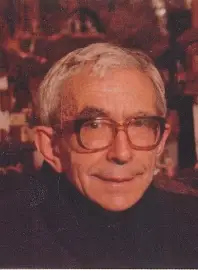

Biografía
Joaquín Erviti Lazcano nació en Estella, Navarra, el 12 de octubre de 1912. A los 15 años decidió ingresar en la Orden de las Escuelas Pías, donde se formó como escolapio y dedicó su vida a la educación y al ministerio sacerdotal.
Vivió y trabajó durante muchos años en Pamplona, especialmente en el Colegio Calasanz. Falleció en esa ciudad el 21 de marzo de 1999. Quienes lo conocieron lo recuerdan por su vocación docente, su cercanía y su acompañamiento espiritual.

Su obra educativa
Como maestro escolapio, Joaquín Erviti se entregó a la formación de varias generaciones de estudiantes. Fue especialmente conocido por enseñar caligrafía, una labor que ejerció con rigor y paciencia y por la que llegó a ser recordado por numerosos pamploneses.
Su tarea educativa no se limitaba a transmitir conocimientos. En el trato cotidiano con sus alumnos procuraba cultivar hábitos como la constancia, el cuidado y la responsabilidad, contribuyendo tanto a su formación académica como personal.
Su testimonio de fe
Su fe se expresó en la fidelidad a su vocación escolapia y en el servicio cotidiano a los demás. Como sacerdote, ofreció orientación y acompañamiento espiritual a quienes acudían a él, procurando escuchar y aconsejar con atención.
Su presencia cercana y su dedicación pastoral hicieron que muchas personas lo consideraran un referente espiritual. Su testimonio se asocia con una fe vivida de manera sencilla, mediante la enseñanza, la escucha y el servicio.
Su legado
El legado de Joaquín Erviti Lazcano permanece en la memoria de sus antiguos alumnos y de quienes compartieron con él la vida del Colegio Calasanz. Su influencia se extendió más allá de las clases, gracias a la relación personal que construyó con muchas personas.
Se le recuerda como educador y sacerdote, pero también como guía y acompañante. La huella que dejó reúne el aprendizaje, la dedicación y los valores que procuró transmitir a lo largo de su vida.
¿Cuánto aprendiste?
Respondé las siguientes preguntas.
1. ¿A qué orden perteneció Joaquín Erviti?
2. ¿A qué dedicó parte de su vida?
3. ¿Con qué santo se relaciona el carisma escolapio?
Fuentes consultadas
Para realizar este trabajo consultamos información sobre las Escuelas Pías y la vida de Joaquín Erviti Lazcano.
También debimos incluir el material de Catequesis para realizar este proyecto.